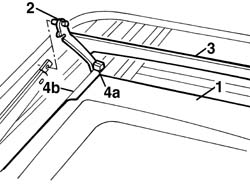

7030B40 drainage channel - r r
- Path
- Procedures > 70 FITTINGS > 7030 SUN ROOF AND HOOD > 7030B sliding roof > 7030B40 drainage channel - r r
- Kind
- repair procedure (removal / refitting; the operation number is the code)
- Applies to
- all engines; all production periods
- Interactive page
- https://sloeber94.github.io/elrnDB-a156/en/#/3238762
Applies to: all engines; all production periods
 Removing
Removing
 Refitting
Refitting7030B18 sliding roof glass - r+r
1. Place the sun visor drape in the closed position
2. Working on both sides disconnect the pins
3. Slide forward by hand the race
4. With a screwdriver remove the pad (4a) from the guide (4b) then, after having removed the other pad extract the drainage race

Applies to: all engines; all production periods
Refitting
RemovingVerify that the race and the anchor pins have no damages
Inser t the race and install the pads on the guides
Slide the race backward
Connect the pins
Place the drape in the open position
7030B18 sliding roof glass - r+r
verify the regular functionality of the drape and of the sliding roof